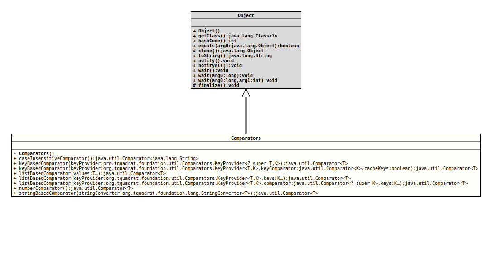

java.lang.Object
org.tquadrat.foundation.util.Comparators
@UtilityClass
@ClassVersion(sourceVersion="$Id: Comparators.java 820 2020-12-29 20:34:22Z tquadrat $")
@API(status=STABLE,
since="0.0.5")
public final class Comparators
extends Object
This class provides factory methods for a bunch of different
implementations of
Comparator.- Author:
- Thomas Thrien (thomas.thrien@tquadrat.org)
- Version:
- $Id: Comparators.java 820 2020-12-29 20:34:22Z tquadrat $
- Since:
- 0.0.5
- UML Diagram
-

UML Diagram for "org.tquadrat.foundation.util.Comparators"
{kind=link}
-
Nested Class Summary
Nested ClassesModifier and TypeClassDescriptionstatic interfaceImplementations of this interface provides the sort order key from the given instance of the type. -
Constructor Summary
Constructors -
Method Summary
Modifier and TypeMethodDescriptionstatic final Comparator<String>Returns a comparator that compares Strings ignoring the case.
Internally this isString.CASE_INSENSITIVE_ORDER, with the limitations described there.static final <T extends Comparable<? super T>>
Comparator<T>Deprecated, for removal: This API element is subject to removal in a future version.static final <T,K extends Comparable<K>>
Comparator<T>keyBasedComparator(Comparators.KeyProvider<? super T, K> keyProvider) Returns a comparator that generates a sort key from the elements before sorting them.
The implementation of this comparator generates the sort keys for each and every comparison.static final <T,K> Comparator<T> keyBasedComparator(Comparators.KeyProvider<T, K> keyProvider, Comparator<K> keyComparator, boolean cacheKeys) A comparator that generates a sort key from the elements before sorting them.
As it is not very efficient to generate the sort keys for each and every comparison, it is possible to cache them.static final <T,K> Comparator<T> listBasedComparator(List<K> keys) Sometimes a special sort order is required that cannot defined as a rule.static final <T,K> Comparator<T> listBasedComparator(K... keys) Sometimes a special sort order is required that cannot be defined as a rule.static final <T,K> Comparator<T> listBasedComparator(Comparators.KeyProvider<T, ? super K> keyProvider, Comparator<? super T> comparator, K... keys) Sometimes a special sort order is required that cannot defined as a rule.static final <T,K> Comparator<T> listBasedComparator(Comparators.KeyProvider<T, K> keyProvider, Comparator<? super T> comparator, List<K> keys) Sometimes a special sort order is required that cannot defined as a rule.static final <T extends Number>
Comparator<T>A comparator for numeric values.
-
Constructor Details
-
Comparators
private Comparators()No instance allowed for this class.
-
-
Method Details
-
caseInsensitiveComparator
@API(status=STABLE, since="0.0.5") public static final Comparator<String> caseInsensitiveComparator()Returns a comparator that compares Strings ignoring the case.
Internally this isString.CASE_INSENSITIVE_ORDER, with the limitations described there.- Returns:
- The comparator.
-
comparableComparator
@API(status=STABLE, since="0.0.5") @Deprecated(since="0.1.0", forRemoval=true) public static final <T extends Comparable<? super T>> Comparator<T> comparableComparator()Deprecated, for removal: This API element is subject to removal in a future version.UseComparator.naturalOrder()instead.Returns a dummy comparator for elements that implementsComparable. Use this comparator if aComparatoris required for some reason, but your objects can be compared already directly by their inherentComparable.compareTo(Object)method.
ANullPointerException(and not aNullArgumentException) is thrown, if the first argument isnull. Whether an exception is thrown when the second argument isnulldepends on the implementation ofT.compareTo(Object).- Type Parameters:
T- The type to compare.- Returns:
- The comparator.
- See Also:
-
keyBasedComparator
@API(status=STABLE, since="0.0.5") public static final <T,K extends Comparable<K>> Comparator<T> keyBasedComparator(Comparators.KeyProvider<? super T, K> keyProvider) Returns a comparator that generates a sort key from the elements before sorting them.
The implementation of this comparator generates the sort keys for each and every comparison. This is obviously not very efficient. A more efficient implementation is provided bykeyBasedComparator(KeyProvider, Comparator, boolean)- Note:
-
- The key provider must return
nullfor anullvalue, as described for .
- The key provider must return
- Type Parameters:
T- The type to compare.K- The key type that is used to determine the order; this may be the same as the type itself.- Parameters:
keyProvider- The method that generates the sort key.- Returns:
- The comparator.
- See Also:
-
keyBasedComparator
@API(status=STABLE, since="0.0.5") public static final <T,K> Comparator<T> keyBasedComparator(Comparators.KeyProvider<T, K> keyProvider, Comparator<K> keyComparator, boolean cacheKeys) A comparator that generates a sort key from the elements before sorting them.
As it is not very efficient to generate the sort keys for each and every comparison, it is possible to cache them.- Notes:
-
- The key provider must return
nullfor anullvalue, as described for . - The internally used cache will be kept for later uses of the comparator; this means that the key provider may not change its behaviour meanwhile.
- The internal cache is based on an
with instances of the argument type
<T>as the key. If the key generation through the key provider will provide equal keys for non-identical, but otherwise equal arguments, the cache may not be efficient.
- The key provider must return
- Type Parameters:
T- The type to compare.K- The key type that is used to determine the order; this may be the same as the type itself.- Parameters:
keyProvider- The method that generates the sort key.keyComparator- The comparator that determines the order for the keys.cacheKeys- A flag that determines whether the keys are to be cached internally;truemeans they are kept,falsemeans that the keys are generated newly for each comparison.- Returns:
- The comparator.
- See Also:
-
listBasedComparator
@SafeVarargs @API(status=STABLE, since="0.0.5") public static final <T,K> Comparator<T> listBasedComparator(K... keys) Sometimes a special sort order is required that cannot be defined as a rule. Instead a list defines the sequence. This method creates a newComparatorinstance that works on the given list of keys. Values that are not on that list will be placed to the end, ordered according to their natural order if they or their keys implement theComparableinterface, or without any specific order.- Type Parameters:
T- The type to compare.K- The key type that is used to determine the order; this may be the same as the type itself.- Parameters:
keys- The sort order keys.- Returns:
- The comparator.
-
listBasedComparator
@API(status=STABLE, since="0.0.5") public static final <T,K> Comparator<T> listBasedComparator(List<K> keys) Sometimes a special sort order is required that cannot defined as a rule. Instead a list defines the sequence. This method creates a newComparatorinstance that works on the given list of keys. Values that are not on that list will be placed to the end, ordered according to their natural order if they or their keys implement theComparableinterface, or without any specific order.- Type Parameters:
T- The type to compare.K- The key type that is used to determine the order; this may be the same as the type itself.- Parameters:
keys- The sort order keys.- Returns:
- The comparator.
-
listBasedComparator
@API(status=STABLE, since="0.0.5") public static final <T,K> Comparator<T> listBasedComparator(Comparators.KeyProvider<T, K> keyProvider, Comparator<? super T> comparator, List<K> keys) Sometimes a special sort order is required that cannot defined as a rule. Instead a list defines the sequence. This method creates a newComparatorinstance that works on the given list of keys.- Type Parameters:
T- The type to compare.K- The key type that is used to determine the order; this may be the same as the type itself.- Parameters:
keyProvider- The implementation ofComparators.KeyProviderthat returns the sort keys for the instances to compare.comparator- The comparator that is used to order the instances that are not listed; ifnull, those are ordered randomly in a non-consistent way if they or their keys do not implement theComparableinterface.keys- The sort order keys.- Returns:
- The comparator.
-
listBasedComparator
@SafeVarargs @API(status=STABLE, since="0.0.5") public static final <T,K> Comparator<T> listBasedComparator(Comparators.KeyProvider<T, ? super K> keyProvider, Comparator<? super T> comparator, K... keys) Sometimes a special sort order is required that cannot defined as a rule. Instead a list defines the sequence. This method creates a newComparatorinstance that works on the given list of keys.- Type Parameters:
T- The type to compare.K- The key type that is used to determine the order; this may be the same as the type itself.- Parameters:
keyProvider- The implementation ofComparators.KeyProviderthat returns the sort keys for the instances to compare.comparator- The comparator that is used to order the instances that are not listed; ifnull, those are ordered randomly in a non-consistent way if they or their keys do not implement theComparableinterface.keys- The sort order keys.- Returns:
- The comparator.
-
numberComparator
@API(status=STABLE, since="0.1.0") public static final <T extends Number> Comparator<T> numberComparator()A comparator for numeric values.- Type Parameters:
T- The type to compare.- Returns:
- The comparator.
- Since:
- 0.1.0
-
Comparator.naturalOrder()instead.